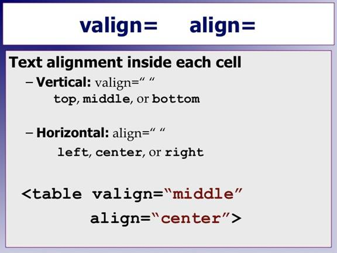
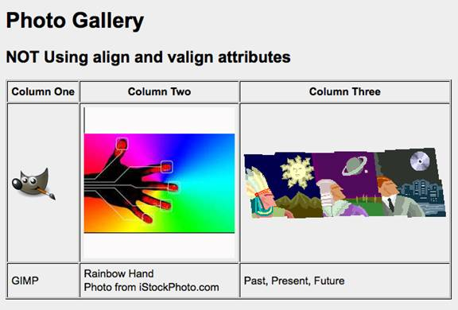
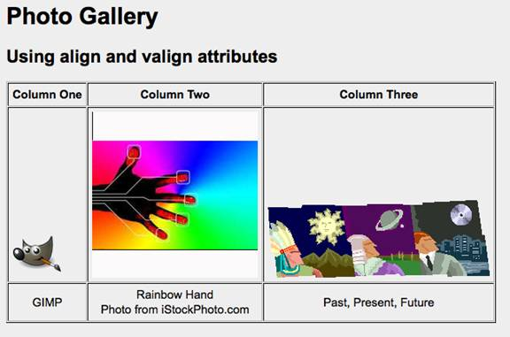
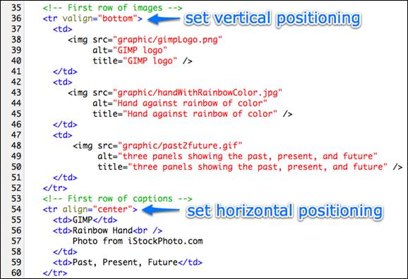
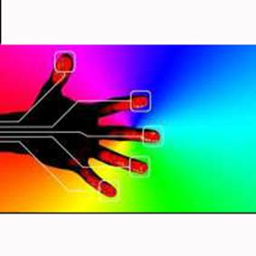
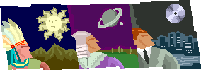

Begin a new table to experiment with images and alignment.
Copy the code of the table you just completed and paste it onto your page.
You might want to separate the two tables using a few line breaks:
<br /><br />
You'll want four rows and three columns. Here is what your code should look like:
<table border="1">
<!-- First row -->
<tr>
<td>r1c1</td>
<td>r1c2</td>
<td>r1c3</td>
</tr>
<!-- Second row -->
<tr>
<td>r2c1</td>
<td>r2c2</td>
<td>r2c3</td>
</tr>
<!-- Third row -->
<tr>
<td>r3c1</td>
<td>r3c2</td>
<td>r3c3</td>
</tr>
<!-- Fourth row -->
<tr>
<td>r4c1</td>
<td>r4c2</td>
<td>r4c3</td>
</tr>
</table>
Add these images
Download these images
The Alignment Attributes

The align attributes allow you to position items inside a column data cell.
If you use the valign=" " attribute you have three choices for the value:
- top
- middle
- bottom
If you use the align= " " attribute you can use these values:
- left
- center
- right
In order for the alignment to show the cells have to be deep enough. This can be done with more text or longer lines. Images also make cells larger.
A common use for the alignment attributes is to display photos with captions.

[D]Here is the same table using valign to move the images to the bottom and align to center the captions.

Note: The Rainbow Hand has a white area above and below the actual image. This is what keeps it from appearing down near the bottom border. The light gray background helps reveal these types of "gotchas" as you design a web page.
Here is the code that accomplishes this:

Notice how the attributes are put in the <tr> elements. This makes them apply to each <td> element inside that <tr>.
Here are copies of the images that you can download to your computer: (right-mouse click on an image, choose "save image as" to your computer. Put in a folder named graphic located in the same folder as your web page.)


Please keep in mind that this type of styling in a table can be done more effectively using CSS, especially when you have similar tables in use on several different pages.